| 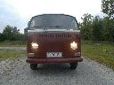 | 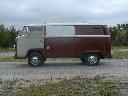 | 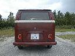 | 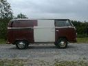 |  |
| 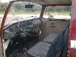 | 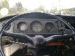 | 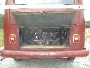 | 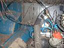 | 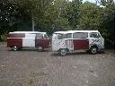 |
| 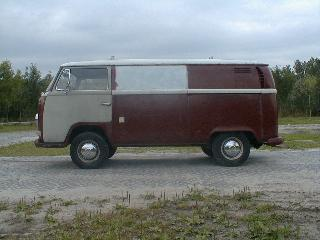 | General info
|
Interrent
I suppose the first owner was the car-rental company 'Interrent'. I compared
some unusual things on this car with another Interrent car and they matched
(the colour, the VW car radio, the black interior and the hardboard panels
in the cargo area). The only difference was that Die Grotte doesn't have
M127 ('rear hatch without window').
| name | location | Licence plate | from | until | |
| 1 | Interrent | Hamburg, West Germany | ??? | March 1st, 1971 | ??? |
| 2 | ??? | ??? | ??? | ??? | ??? |
| 3 | ??? | ??? | ??? | ??? | ??? |
| 4 | Karin Seeger-Riemer | West Berlin, West Germany | B-CH 8686 (?) | ??? | April 17th, 1989 |
| 5 | Ole Lempert | West Berlin, West Germany | B-CH 8686 | April 17th, 1989 | June 4th, 1991 (?) |
| 6 | ??? | Braunschweig, Germany (?) | - | ??? | ??? |
| 7 | Erik Meltzer | Braunschweig, Germany | - | 1997 | September 3rd, 2000 |
| 8 | Jens Zeemans | Goutum, The Netherlands | - | September 3rd, 2000 | 10th of May, 2001 |
| 9 | Vincent Molenaar | Leeuwarden, The Netherlands | BE-46-21 | 10th of May, 2001 | - |
To be continued...
| 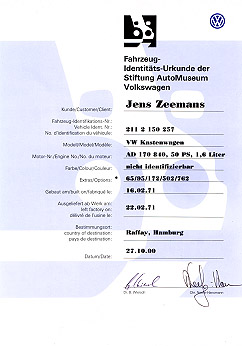 | |
|
Customer: |
Jens Zeemans |
|
Vehicle Ident. Nr.: |
211 2 150 257 |
|
Model: |
VW-Kastenwagen (panelvan) |
|
Engine No.: |
AD 170 840 |
|
Colour: |
nicht identifizierbar (cannot be identified) |
|
Extras: |
* 65/95/172/502/762 |
|
Built on: |
16.02.71 |
|
left factory on: |
22.02.71 |
|
Country of destination: |
Raffay, Hamburg |
|
Date: |
17.10.00 |
More info on the M-plate: http://www.type2.com/m-codes/
|
| ||||||||||||||||||||||||||||||||||||||
| Last update: December 2nd, 2003 Copyright © Vincent Molenaar molenari@hotmail.com |
DISCLAIMER | Vincenzo's
Volkswagen Vans |
{kind=link}
{kind=link}
{kind=link}
{kind=link}
{kind=link}
{kind=link}
{kind=link}
{kind=link}
{kind=link}
{kind=link}
{kind=link}
{kind=link}
{kind=link}